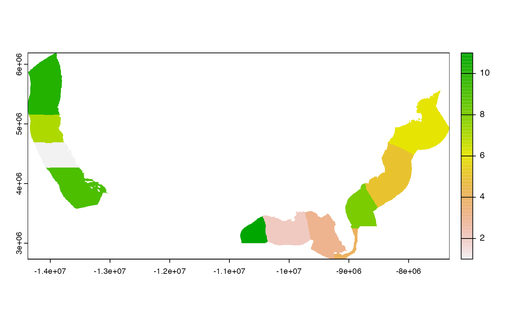
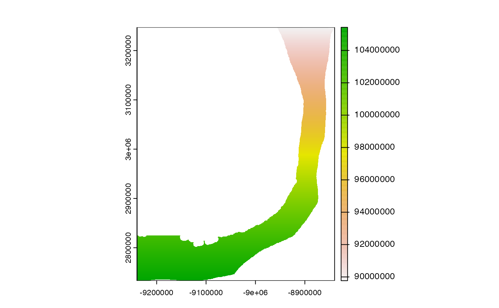

Get OffHab reference raster of cells by cell_id, zone_id or all NA and
optionally trim to zone_id.
the type of raster, being one of: "NA" (default all NA values)
"cell_id" with unique cell indices to set values of reference raster,
"region" showing the 3 unique regions ("Atlantic","Gulf of Mexico" and "Pacific"),
"zone_id" corresponding with the zone_id of oh_zones,
"block_id" corresponding with the block_id of oh_blocks,
"elev_m" for GEBCO elevation (meters), or "area_m2"
for square meter area per cell
the zone_id (integer) to trim the output raster, being one of the
zones found in the zone_id field of oh_zones or "ALL" zones (the default)
the zone_version (integer) to choose, whether original BOEM
planning area clipped out to EEZ (=1) or more restricted to OceanAdapt regions
for bottom trawl data (=2); applies to either type of "zone_id" or "block_id"
use web-optimized cloud-optimized GeoTIFF version; default=FALSE
return a reference raster (from terra::rast())
The OffHab reference raster is based on the GEBCO global bathymetry clipped to the
United States in the web Mercator projection (EPSG:3857) for readily using
with interactive maps (e.g. leaflet::leaflet()).
# reference raster with all NA values
r_na <- oh_rast()
r_na
#> class : SpatRaster
#> dimensions : 7183, 14678, 1 (nrow, ncol, nlyr)
#> resolution : 481.3177, 481.3177 (x, y)
#> extent : -14378304, -7313523, 2733139, 6190444 (xmin, xmax, ymin, ymax)
#> coord. ref. : WGS 84 / Pseudo-Mercator
#> source : spat_2h4G84Yylo6jmjp_99541.tif
#> name : NA
#> min value : NaN
#> max value : NaN
# zone_id for all zones
r_zid <- oh_rast("zone_id")
r_zid
#> class : SpatRaster
#> dimensions : 7183, 14678, 1 (nrow, ncol, nlyr)
#> resolution : 481.3177, 481.3177 (x, y)
#> extent : -14378304, -7313523, 2733139, 6190444 (xmin, xmax, ymin, ymax)
#> coord. ref. : WGS 84 / Pseudo-Mercator
#> source : oh_zones_v1.tif
#> name : zone_id_v1
#> min value : 1
#> max value : 11
terra::plot(r_zid)

# cell_id for all zones
r_cid <- oh_rast("cell_id")
r_cid
#> class : SpatRaster
#> dimensions : 7183, 14678, 1 (nrow, ncol, nlyr)
#> resolution : 481.3177, 481.3177 (x, y)
#> extent : -14378304, -7313523, 2733139, 6190444 (xmin, xmax, ymin, ymax)
#> coord. ref. : WGS 84 / Pseudo-Mercator
#> source : spat_gUh9PljFhZ2UhSI_99541.tif
#> name : cell_id
#> min value : 1001
#> max value : 105428344
terra::plot(r_cid)
# cell_id for Straits of Florida (zone_id: 4; zone_key: fls)
r_cid_fls <- oh_rast("cell_id", 4)
#>
|---------|---------|---------|---------|
=========================================
r_cid_fls
#> class : SpatRaster
#> dimensions : 1068, 831, 1 (nrow, ncol, nlyr)
#> resolution : 481.3177, 481.3177 (x, y)
#> extent : -9239756, -8839781, 2733139, 3247186 (xmin, xmax, ymin, ymax)
#> coord. ref. : WGS 84 / Pseudo-Mercator
#> source(s) : memory
#> name : cell_id
#> min value : 89767232
#> max value : 105428344
terra::plot(r_cid_fls)
